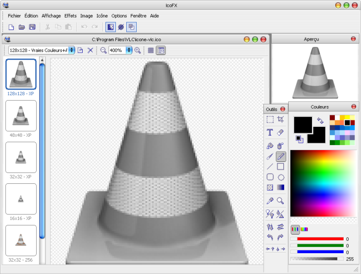
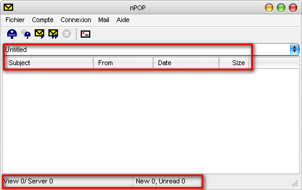

Vous avez un logiciel que vous adorez, mais il est en anglais / allemand / chinois / etc., et vous en avez marre ? :colere: Vous voulez diffuser un logiciel libre en français pour toucher un plus vaste public ?
Ou bien vous désirez simplement personnaliser l'aspect d'un programme ?
Vous êtes arrivés au bon endroit :) ! Nous allons apprendre à le faire très simplement et rapidement. Vous n'aurez rien à compiler, ni quoi que ce soit de compliqué à réaliser.
Un logiciel exécutable est généralement constitué d'un fichier écrit en langage machine (= binaire), langage que l'ordinateur est le seul à comprendre. Toutefois, la structure de cet exécutable suit une certaine forme.
Exemple
Si vous avez pêle-mêle dans un programme des images, des icônes, etc., elles sont structurées de façon très précise dans le programme. Qui plus est, elles s'y trouvent toujours sous leur forme originale (images bitmap et icônes). Ce sont des ressources.
Si vous avez déjà fait un peu de programmation graphique sous Windows, vous savez certainement que les menus et boîtes de dialogue d'un logiciel sont aussi des ressources. Elles sont donc accessibles facilement, et c'est là le rôle de l'éditeur de ressources :-° .
En premier lieu, nous allons donc avoir besoin d'un éditeur de ressources.
Laissez-moi vous présenter...
Ce logiciel va nous servir à éditer (à ouvrir, quoi :p ) des fichiers exécutables sous Windows, comme les .exe, les .dll et autres. Vous pouvez aller le télécharger sur le site officiel, ou ailleurs, c'est comme vous voulez !
Mieux vaut avoir aussi un éditeur hexadécimal
Dans certaines situations, il se peut que vous vouliez modifier du texte qui n'apparaît pas dans les ressources du logiciel. Dans ce cas, nous risquons d'avoir besoin d'un éditeur hexadécimal, qui nous permettra d'éditer les logiciels (ou n'importe quel autre fichier, d'ailleurs) directement au niveau binaire.
Il existe beaucoup d'éditeurs hexadécimaux, payants comme gratuits... Pour ma part, celui que je préfère (en gratuit) est HxD :) . Il est assez complet, simple, léger et très intuitif.
Si vous avez prévu de modifier les icônes et les images du logiciel, il vaut mieux avoir un logiciel de retouche d'image. Paint ou Paint.net suffiront amplement.
Il faut aussi se munir d'un éditeur d'icônes. Personnellement, j'utilise IcoFX. Le télécharger là-bas. Vous pouvez aussi voir ce que vous propose M@teo21 à ce sujet.
Et enfin, quelques cobayes...
Enfin, il nous faut un de petits logiciels que nous allons torturer un peu... Âmes sensibles s'abstenir.
Bon, ben voyons voyons... Je crois que ça y est, mon choix est fait : nous allons commencer avec VideoLan !
Faites-moi une sauvegarde de VLC (on ne sait jamais :lol: ), et rejoignez-moi à la prochaine sous-partie !
Comment ça, vous avez lancé ResHack sans moi !? :colere2: :colere2: Bon, allez, je vous pardonne... :p
Faites : File > Open, et ouvrez "C:\Program Files\VLC\vlc.exe".
Voici ce que vous obtenez :
Vous avez devant vous la structure des ressources d'une application Windows (appelée aussi PE).
Nous avons accès aux images contenues dans le logiciel (Bitmap, gif), les icônes, les curseurs.
Cliquez sur : Icon Group > VLC_ICON > 1033.
Nous avons devant nous l'icône principale du logiciel.
Faites un clic-droit sur 1033, et choisissez "Save [Icon Group:VLC_ICON:1033]" comme moi.
Maintenant, enregistrez l'icône que vous avez extraite. Pour ma part, je la nomme icone-vlc.
Éditer l'icône avec icoFX
Lancez IcoFX, et ouvrez le fichier icone-vlc (là où vous l'avez mis).
Ceci n'est pas un cours de graphisme ! :p Nous allons nous contenter d'effectuer quelques changements visibles. Moi, j'ai simplement modifié l'icône en niveaux de gris. Mais vous pouvez laisser libre cours à votre imagination !

Remplacement de l'icône
On retourne sur ResHack. Vous allez cliquer (clic-droit) sur 1033, et choisissez "Replace Ressource...".
Une boîte de dialogue s'ouvre. Vous allez cliquer sur "Open file with new icon...".
et ouvrir icone-vlc.ico, puis cliquer sur Replace !
Il ne vous reste plus qu'à faire File > Save as... et donner un nouveau nom à votre exécutable.
Résultat en image
Nous allons maintenant apprendre à modifier les menus et les boîtes de dialogues. Pour cela, j'ai prévu de traduire un petit logiciel très sympa (vous n'êtes pas obligés... :lol: ).
Dézippez l'archive dans le dossier de votre choix. Lancez nPOP.
Comme vous pouvez le constater, c'est un logiciel absolument basique :p . Regardez bien comment il est fait : menus, onglets, boîtes de dialogue. Tout cela va nous être utile par la suite !
Faites : File > Open, et ouvrez nPOP.exe. Voici ce que vous devez obtenir :
Nous allons cette fois nous concentrer sur les menus et les boîtes de dialogues. Analysons un menu de plus près. Cliquez sur : Menu > 101 > 0.
Vous avez là le menu principal de l'application. Notez bien la fenêtre représentant le menu en bas.
Vous pouvez constater que c'est bel et bien le menu principal de nPOP. Comparez les zones que j'ai marquées en jaune avec les sous-menus déroulants.
Nous pouvons déduire que :
chaque onglet du menu est appelé POPUP
les sous-menus sont appelés MENUITEM.
Modifions à présent tout ça. Servez-vous de ResHack comme d'un éditeur classique. Nous allons traquer impitoyablement :colere2: tous les mots en anglais du menu 101.
Faites comme moi
Puis cliquez sur Compile Script.
Et là, magie ! :magicien:
Regardez : le menu en bas a changé, il parle français ! :lol:
Maintenant sauvegardons : File > Save.
Lancez nPOP, suspense... Le menu a effectivement changé ! :D Si, si, je vous jure !
À présent, renouvelez l'opération sur tous les menus et toutes les boîtes de dialogues. Vous ne croyez quand même pas que je vais tout faire pas à pas avec vous ! :p
(2 heures plus tard...) Testez le résultat !
Bon ! Mais certaines parties sont toujours en anglais. C'est nul, ton truc !

Si vous avez bien tout traduit et que vous avez un tel problème, il ne reste qu'une seule solution : l'éditeur Hexa.
Bon, ben qu'est-ce que vous attendez pour passer à la partie suivante ?
Commençons par lancer HxD. Ouvrons nPOP.exe : File > Open...
Attention...
Personne n'a vomi ? :(
Ne craignez rien, cet éditeur est réellement très bien fait, vous ne risquez rien ! :lol:
Mais pourquoi tu n'ouvres pas nPOP.exe avec Notepad, par exemple ?
Excellente question ! Si tu restes attentif, tu vas vite comprendre ! :p
Nous allons effectuer une recherche des mots en anglais qui subsistent :
Comme nous avons téléchargé la version Unicode de nPOP, une recherche avec Notepad n'aurait strictement rien donné... C'est pourquoi vous devez cocher la case Unicode string.
Nous devons trouver le mot "Subject" proche des mots "From" "Date" et "Size". Sinon, cliquez sur F3 (= chercher mot suivant).
Et voilà...
Quelques points importants
Avant de modifier quoi que ce soit, je dois vous prévenir que toucher à un fichier exécutable doit se faire avec un maximum de prudence, sinon il deviendra inutilisable. Ne modifiez que le texte, sans quoi vous risquez des ennuis ! Si la traduction dépasse le nombre de caractères disponibles (comme pour "Size"), laissez tomber ! Si elle est plus courte, mettez des espaces.
Moi, j'ai traduit "Subject" et "From" :
Maintenant, sauvegardez !
Résultat
Bon, OK, je n'ai pas tout modifié, mais je vous laisse finir !
Il arrive parfois que ResHack refuse d'ouvrir des ressources :
Il peut aussi arriver qu'un programme modifié avec ResHack vous fasse ceci :
La raison en est que certains logiciels ont subi un traitement spécial après leur compilation : ils ont été packés. Dans ce cas, le programme devient illisible pour ResHack.
Sachant que les projets libres utilisent bien souvent UPX pour compacter leurs logiciels, car libre lui aussi et en plus très performant, nous allons directement tenter de le décompresser avec.
Une fois UPX téléchargé, dézippez-le, puis déplacez le fichier upx.exe dans C:\WINDOWS\system32 ou équivalent. Ceci nous permettra d'utiliser UPX simplement depuis la ligne de commande. Le logiciel possède heureusement une fonction de décompression que nous allons apprendre à utiliser.
Lorsque vous serez prêts, nous allons passer en ligne de commande : Démarrer > Exécuter, et tapez cmd. Si vous tapez "upx", vous aurez un aperçu des fonctionnalités du logiciel.
Nous allons d'abord nous positionner dans le dossier où est situé Notepad2 (chez moi, c'est dans "C:\Documents and Settings\Administrateur\Bureau otepad2"). Puis faites :
upx -d notepad2.exe
Si vous obtenez cette réponse, c'est que c'est bon, vous n'avez plus besoin de moi !
Ça ne marche pas !
Dans ces cas, il vous reste deux solutions :
Abandonner ! (Recommandé.) :lol:
Essayer de trouver avec quel logiciel le programme a été packé (essayez PEID), et si vous avez trouvé, le décompresser à l'aide du logiciel correspondant. Mais cela, nous ne l'aborderons pas ici.
Ce tutoriel est là pour vous expliquer les bases de la personnalisation sous Windows. Mais sachez qu'il existe beaucoup de logiciels / trucs pour vous simplifier la vie.
Vous pouvez par exemple aller lire ce tutoriel sur le Site du Zér0, ou bien chercher sur Google.
Je crois cependant que cela valait la peine de savoir comment ça marche, non ?